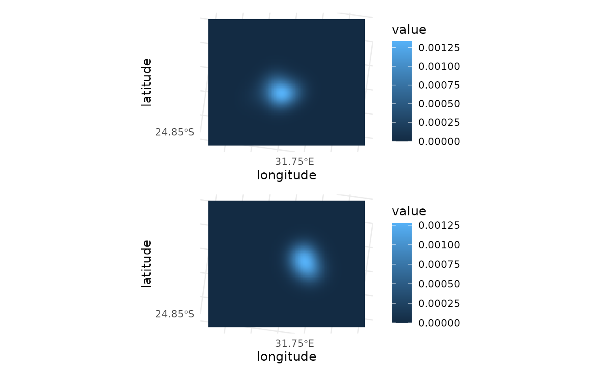

Quantify the home range using autocorrelated kernel density estimation
Source:R/hr_tt_akde.R
hr_tt_akde.RdThis function estimates the home range of each track using autocorrelated
kernel density estimation (AKDE, Fleming et al. 2015), as implemented in
the package ctmm (ctmm::akde()). Unlike conventional kernel density
estimation (hr_tt_kde()), AKDE accounts for the autocorrelation of
locations in tracking data, which otherwise leads to underestimating home
ranges. AKDE requires a movement model for each track, which must first be
fitted with ctmm_tt_fit().
Usage
hr_tt_akde(
x,
models,
bbox = NULL,
res = NULL,
levels = NULL,
weights = FALSE,
debias = TRUE,
tolerance = 0.001,
ci_level = 0.95
)Arguments
- x
A move2 object, in a projected coordinate reference system with units in metres (the same used to fit the models). If grouped, each group must contain a single track; otherwise, the track id is used as grouping variable.
- models
A table of movement models created with
ctmm_tt_fit()(with a model for each track inx).- bbox
A named vector of four elements (
xmin,ymin,xmax,ymax) defining a grid shared by all groups, or a list of one such vector per group. IfNULL(the default), a shared grid that contains all the UDs is created (see Details).- res
The resolution of the grid (in metres). Supply one value for a shared resolution or one value per group. If
NULL(the default), the resolution follows the default ofctmm(see Details); with a list ofbbox(one per group), each group has its own default resolution.Per-group values of
bboxandresare matched to the groups in the order ofdplyr::group_keys()(i.e. sorted by the grouping variables).- levels
A vector of levels for the isopleths (i.e. contour lines), as numbers between 0 and 1. If
NULL(the default), the full UD is returned; otherwise just the isopleths are returned (seehr_tt_kde()).- weights
Logical; if
TRUE, the locations are weighted to account for irregular sampling and gaps in the tracks (Fleming et al. 2018). This is recommended for irregularly sampled tracks, but it is slower. Default isFALSE.- debias
Logical; whether to correct the bias of the estimate of the home range area (see
ctmm::akde()). Default isTRUE.- tolerance
The target error of the numerical computations of
ctmm::akde()(itserrorargument), which also defines the default grid (the probability mass of each UD outside the grid). A warning is given if more than this (and more than 1%) of a UD is outside the grid (e.g. with abboxthat is too small). Default is 0.001.- ci_level
The confidence level of the confidence intervals of the home range areas, returned when
levelsis set. Default is 0.95.
Value
Either a tibble of class hr_tt_ud_tbl, or, if levels is not
NULL, an sf tibble of class hr_tt_poly_tbl (as returned by
hr_tt_ud_iso()), with columns:
the grouping variable (as named in
x; ifxis grouped by multiple variables, this column is namedgroup_id): the ids from the grouping ofxmethod: the method used to estimate the home range ("akde")model_name: the name of the movement model useddof_area: the effective number of degrees of freedom of the home range area (small values imply very uncertain estimates)xmin,ymin,xmax,ymax: the bounding box of the gridres: the resolution of the grid Iflevelsis NULL:ud: the UDs, as a list-column ofterra::SpatRasterobjectsud_ctmm: the UDs, as a list-column ofctmmUDobjects Else, iflevelsis not NULL, there is one row per group and level, and the following columns are added:level: the level of the isopletharea: the area of the isopleth (computed from its polygon)area_low,area_high: the confidence interval of the home range area at this level, as estimated byctmm(its point estimate, computed from the UD rather than from the polygon, can differ slightly fromarea)geometry: ansfccolumn containing the multipolygons representing the isopleth for the appropriate level
Details
The utilisation distributions (UDs) are estimated on a grid
shared by all groups (unless a bbox is given for each group), so that
they can be combined or compared (e.g. with hr_tt_ud_sum() or
hr_tt_ud_overlap()). By default, the grid follows the defaults of
ctmm::akde(): its resolution is a tenth of the smallest bandwidth (or
of the smallest standard deviation of the home range of the movement
model) among all groups, and it extends far enough from the locations to
contain all but a fraction tolerance of each UD. The cells are square,
so that the grid can be used with the other hr_tt_ functions.
Each UD is estimated by ctmm directly on the grid (i.e. it is not
resampled), and is standardised to sum to 1 over the grid. The ctmm UD
objects are also returned (in column ud_ctmm), so that they can be used
with other functions of ctmm (e.g. ctmm::overlap() or
ctmm::meta()), and so that hr_tt_ud_iso() can compute the
confidence intervals of the areas of the isopleths of the UDs (i.e.
hr_tt_ud_iso(hr_tt_akde(x, models), levels) returns the same isopleths
as hr_tt_akde(x, models, levels = levels), without estimating the UDs
again).
The models are matched to the tracks by track id. As models are fitted to
each track, each group of x must contain a single track (which is the
case when x is not grouped). The tracks must not have changed since the
models were fitted (i.e. they must have the same events with a location).
Models without a home range (e.g. Brownian motion) cannot be used.
References
Fleming, C.H., Fagan, W.F., Mueller, T., Olson, K.A., Leimgruber, P. & Calabrese, J.M. (2015) Rigorous home range estimation with movement data: a new autocorrelated kernel density estimator. Ecology, 96, 1182-1188.
Fleming, C.H., Sheldon, D., Fagan, W.F., Leimgruber, P., Mueller, T., Nandintsetseg, D., Noonan, M.J., Olson, K.A., Setyawan, E., Sianipar, A. & Calabrese, J.M. (2018) Correcting for missing and irregular data in home-range estimation. Ecological Applications, 28, 1003-1010.
See also
ctmm_tt_fit() to fit the movement models, hr_tt_akde_pop()
to combine the UDs into population UDs, hr_tt_kde() for conventional
kernel density estimation.
Examples
data(buffalo, package = "ctmm")
buffalo_tt <- mt_as_move2(buffalo)
# we use a subset of the first two buffalo to make the example fast
buffalo_sub <- buffalo_tt %>%
filter_by_meta(track %in% c("Cilla", "Gabs")) %>%
dplyr::group_by(track) %>%
dplyr::slice_head(n = 100) %>%
dplyr::ungroup()
buffalo_fit <- ctmm_tt_fit(buffalo_sub, model = "ou")
#> Minimum sampling interval of 59 minutes in Cilla
#> Minimum sampling interval of 57 minutes in Gabs
buffalo_akde <- hr_tt_akde(buffalo_sub, buffalo_fit)
buffalo_akde
#> # A tibble: 2 × 11
#> track method model_name dof_area xmin ymin xmax ymax res
#> <chr> <chr> <chr> <dbl> <dbl> <dbl> <dbl> <dbl> <dbl>
#> 1 Cilla akde OU anisotropic 3.29 22253. -12568. 55239. 14083. 218.
#> 2 Gabs akde OU anisotropic 1.68 22253. -12568. 55239. 14083. 218.
#> # ℹ 2 more variables: ud <named list>, ud_ctmm <named list>
library(ggplot2)
autoplot(buffalo_akde)

# the 50% and 95% isopleths, with confidence intervals on their area
hr_tt_akde(buffalo_sub, buffalo_fit, levels = c(0.5, 0.95))
#> Simple feature collection with 4 features and 13 fields
#> Geometry type: MULTIPOLYGON
#> Dimension: XY
#> Bounding box: xmin: 30598.58 ymin: -6594.996 xmax: 48214.79 ymax: 7132.412
#> Projected CRS: PROJCRS["unknown",
#> BASEGEOGCRS["unknown",
#> DATUM["World Geodetic System 1984",
#> ELLIPSOID["WGS 84",6378137,298.257223563,
#> LENGTHUNIT["metre",1]],
#> ID["EPSG",6326]],
#> PRIMEM["Greenwich",0,
#> ANGLEUNIT["degree",0.0174532925199433],
#> ID["EPSG",8901]]],
#> CONVERSION["unknown",
#> METHOD["Two Point Equidistant"],
#> PARAMETER["Latitude of 1st point",-24.2850983757726,
#> ANGLEUNIT["degree",0.0174532925199433,
#> ID["EPSG",9122]]],
#> PARAMETER["Longitude of 1st point",31.7775407470691,
#> ANGLEUNIT["degree",0.0174532925199433,
#> ID["EPSG",9122]]],
#> PARAMETER["Latitude of 2nd point",-25.024736901024,
#> ANGLEUNIT["degree",0.0174532925199433,
#> ID["EPSG",9122]]],
#> PARAMETER["Longitude of 2nd point",31.8880063438124,
#> ANGLEUNIT["degree",0.0174532925199433,
#> ID["EPSG",9122]]],
#> PARAMETER["False easting",0,
#> LENGTHUNIT["metre",1],
#> ID["EPSG",8806]],
#> PARAMETER["False northing",0,
#> LENGTHUNIT["metre",1],
#> ID["EPSG",8807]]],
#> CS[Cartesian,2],
#> AXIS["(E)",east,
#> ORDER[1],
#> LENGTHUNIT["metre",1,
#> ID["EPSG",9001]]],
#> AXIS["(N)",north,
#> ORDER[2],
#> LENGTHUNIT["metre",1,
#> ID["EPSG",9001]]]]
#> # A tibble: 4 × 14
#> track method model_name dof_area xmin ymin xmax ymax res level
#> * <chr> <chr> <chr> <dbl> <dbl> <dbl> <dbl> <dbl> <dbl> <dbl>
#> 1 Cilla akde OU anisotropic 3.29 22253. -12568. 55239. 14083. 218. 0.5
#> 2 Cilla akde OU anisotropic 3.29 22253. -12568. 55239. 14083. 218. 0.95
#> 3 Gabs akde OU anisotropic 1.68 22253. -12568. 55239. 14083. 218. 0.5
#> 4 Gabs akde OU anisotropic 1.68 22253. -12568. 55239. 14083. 218. 0.95
#> # ℹ 4 more variables: area [m^2], area_low [m^2], area_high [m^2],
#> # geometry <MULTIPOLYGON [m]>